Accesibilidad.
Modernizar el baño, personalizándolo e incorporándole diseño junto a todo tipo de prestaciones según la discapacidad de la que se trate, es hoy una opción real, al alcance de todo el mundo, a diferencia de lo que sucedía antaño.
Te ofrecemos una amplia selección de marcas, en exposición y en catálogos, especializadas en baños adaptados, con propuestas atractivas en cuanto a diseños, utilidades y también precios.
Griferías, sanitarios, mamparas, bañeras, duchas y el resto de accesorios para que un baño adaptado disponga de los elementos que quieras que tenga.
Revisa a continuación algunas novedades recientes, y síguenos en redes social para estar siempre al día.
Y si lo que buscas no está en exposición, lo buscamos en la Bagnoteca, nuestra biblioteca de catálogos.
Novedades 202640
 Accesibilidad
AccesibilidadUn lavabo accesible que encaja en cualquier baño contemporáneo
El equipamiento accesible ha cargado durante mucho tiempo con una estética que lo delataba a primera vista. Funcional, sí. Pero difícil de integrar en un espacio donde el diseño importa.
Esto acaba de cambiar con este lavabo de HEWI, 450x400mm en composite mineral, con cantos redondeados que eliminan el riesgo de impacto, una cubeta más profunda de lo habitual para mejorar la ergonomía, y una superficie de alta resistencia para uso intensivo.
Cumple normativa DIN EN 14688, CE y UKCA.
 Accesibilidad
AccesibilidadUn lavabo accesible que encaja en cualquier baño contemporáneo
El equipamiento accesible ha cargado durante mucho tiempo con una estética que lo delataba a primera vista. Funcional, sí. Pero difícil de integrar en un espacio donde el diseño importa.
Esto acaba de cambiar con este lavabo de HEWI, 450x400mm en composite mineral, con cantos redondeados que eliminan el riesgo de impacto, una cubeta más profunda de lo habitual para mejorar la ergonomía, y una superficie de alta resistencia para uso intensivo.
Cumple normativa DIN EN 14688, CE y UKCA.
 Accesibilidad
AccesibilidadLavabo accesible con grifería lateral - Hewi
En proyectos donde la accesibilidad condiciona la distribución del baño, cada centímetro disponible cuenta. Este lavabo compacto, de 400 mm de ancho y 250 mm de profundidad, permite optimizar el espacio sin renunciar a la comodidad de uso.
La grifería situada en el lateral izquierdo libera la zona frontal, mejorando la aproximación y facilitando su utilización en entornos adaptados.
Fabricado en composite mineral no poroso en acabado blanco alpino, ofrece una elevada resistencia al uso diario y simplifica las tareas de mantenimiento. Su diseño de radios amplios y la ausencia de rebosadero favorecen además una limpieza más sencilla e higiénica.
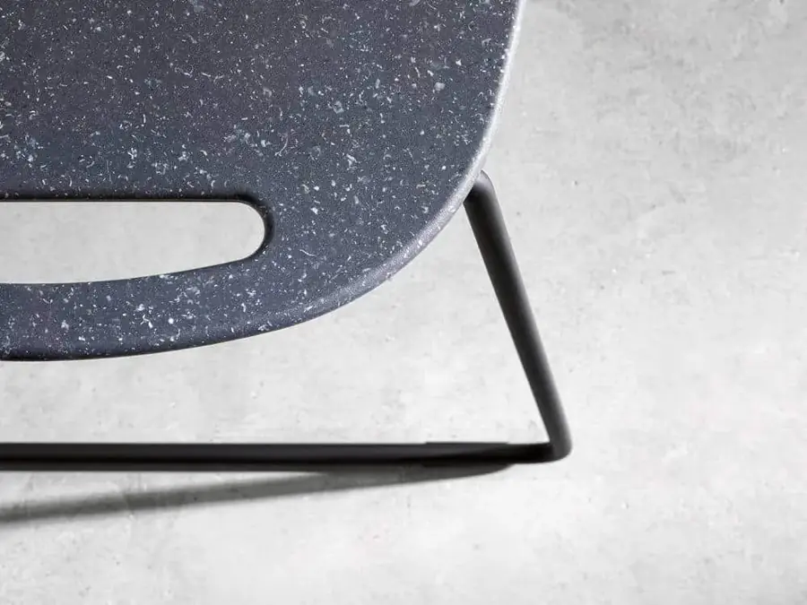
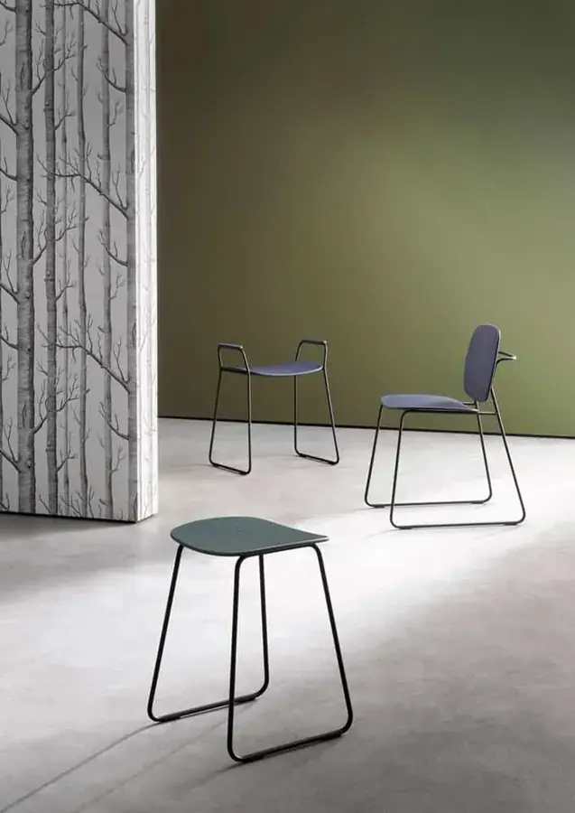
AccesibilidadAsientos para duchas accesibles Re-seat - Hewi
La serie Re-seat introduce una solución accesible pensada para proyectos donde la ergonomía, la durabilidad y la sostenibilidad deben convivir.
Fabricados con polipropileno y poliamida reciclados, la colección presenta asientos en una superficie moteada muy resistente al uso intensivo, ideal para residencias, hospitales o viviendas adaptadas.
Su ligereza facilita la manipulación y limpieza, mientras que la variedad de modelos — 3 taburetes y 2 sillas de baño con respaldo— permite resolver distintas necesidades de apoyo sin renunciar a una estética neutra, natural y contemporánea.
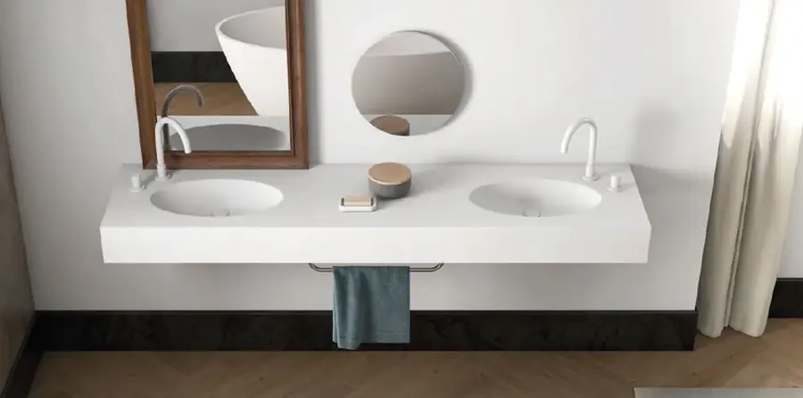
 Accesibilidad
AccesibilidadLavabos accesibles para empresas y hoteles – Hidrobox
Diseñados para entornos que requieren accesibilidad, resistencia y mantenimiento sencillo, los lavabos accesibles de Hidrobox responden a distintos usos profesionales. Ideal para empresas y sector hotelero.
Program incorpora seno Oval con espacio libre entre el borde y el sifón que facilita el acceso frontal
Titan resuelve usos colectivos con encimeras suspendidas de gran formato sin rebosadero
Civit ofrece una solución compacta con elementos funcionales para personas con movilidad reducida, adecuada para baños accesibles que requieren facilidad de mantenimiento.
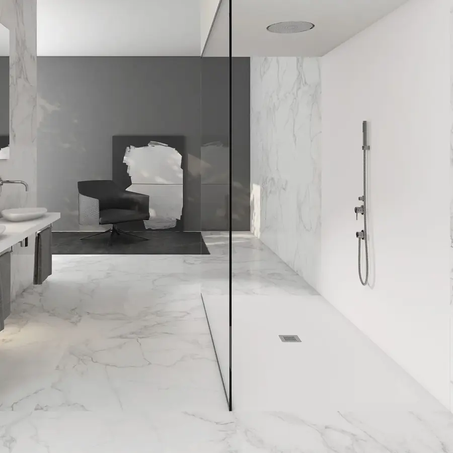
AccesibilidadPlatos de ducha empotrados accesibles – Hidrobox
La gama PMR de Hidrobox ofrece soluciones de ducha accesibles mediante platos empotrados y totalmente enrasados, eliminando barreras y facilitando el uso a personas con movilidad reducida.
Fabricados en materiales de alta resistencia, incorporan texturas antideslizantes certificadas que mantienen estabilidad sin alterar el tacto ni el color.
El diseño optimiza pendientes de evacuación y durabilidad estructural. Para una instalación segura, pueden suministrarse con kit de impermeabilización, resolviendo proyectos que requieren normativa de accesibilidad.
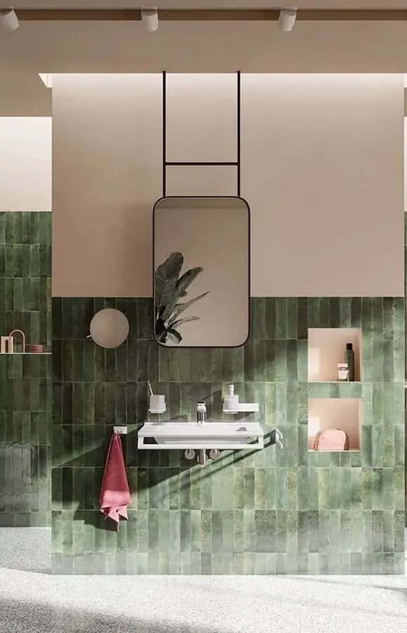
AccesibilidadAccesorios de baño accesibles Sistema S900Q – Hewi
Nueva gama de accesorios con perfil cuadrado que aporta una lectura más arquitectónica y ordenada del espacio.
Diseñado para lavabos, inodoros y zonas de ducha, permite configurar baños funcionales sin renunciar a un lenguaje contemporáneo.
La serie ofrece acabados en acero inoxidable, cromo y PVD, seleccionados por su resistencia al desgaste y facilidad de mantenimiento, lo que la hace apta para proyectos públicos, hoteleros y residenciales de uso intensivo.
Su compatibilidad con el Sistema 900 redondeado facilita combinar ambas líneas manteniendo cohesión estética y funcional.
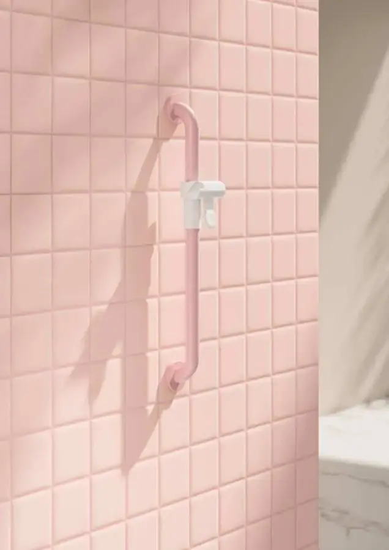
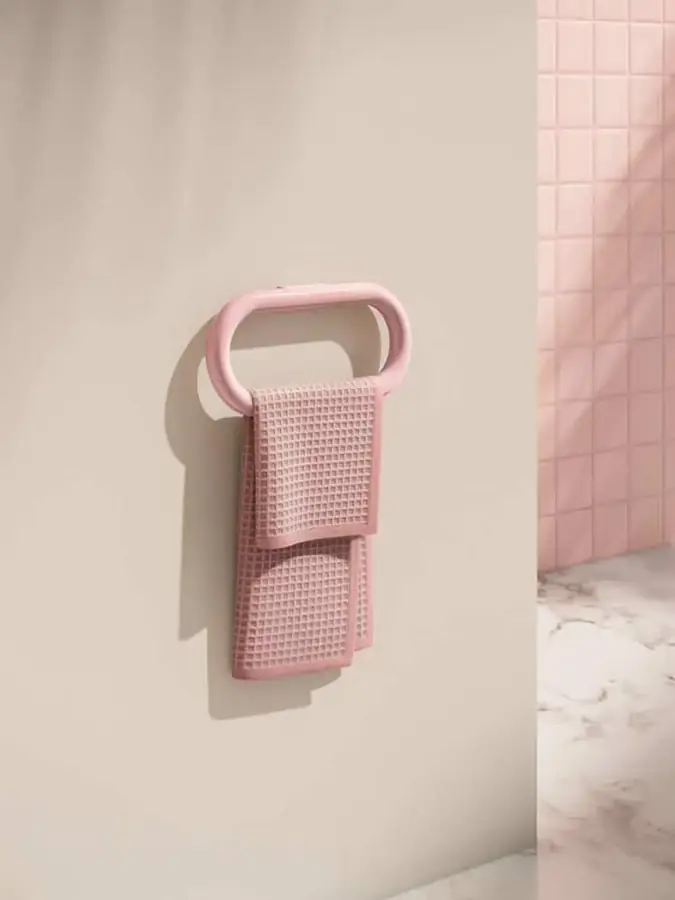
AccesibilidadElementos accesibles para baño - HEWI
Una línea de estética pop, disponible en 16 de sus tonos más icónicos, con amplias posibilidades de combinación.
Diseñada bajo principios de accesibilidad e inclusión, está pensada para proyectos contract, educativos o sanitarios.
Fabricada en poliamida de alta resistencia al impacto, ofrece una solución técnica, segura y de instalación sencilla.
Una propuesta visualmente diferenciadora que garantiza durabilidad, funcionalidad y adaptabilidad en espacios exigentes.
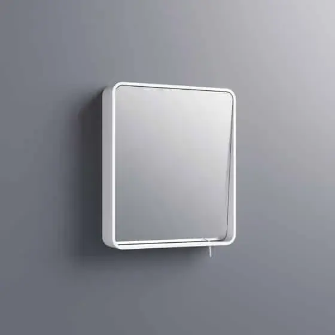
AccesibilidadEspejo para baños basculante - Hewi
El nuevo espejo basculante de HEWI combina un diseño contemporáneo con la funcionalidad más duradera. Fabricado con vidrio flotado de alta calidad y bordes redondeados, este modelo rectangular incluye una lámina de protección anti astillas para mayor seguridad.
El marco de aluminio que rodea todo el espejo está disponible en blanco mate intenso (DX) y negro mate intenso (DC), ambos con un acabado en polvo que resalta su elegancia.
El espejo de HEWI es ideal para cualquier entorno, aportando un toque moderno y sofisticado a la estancia.
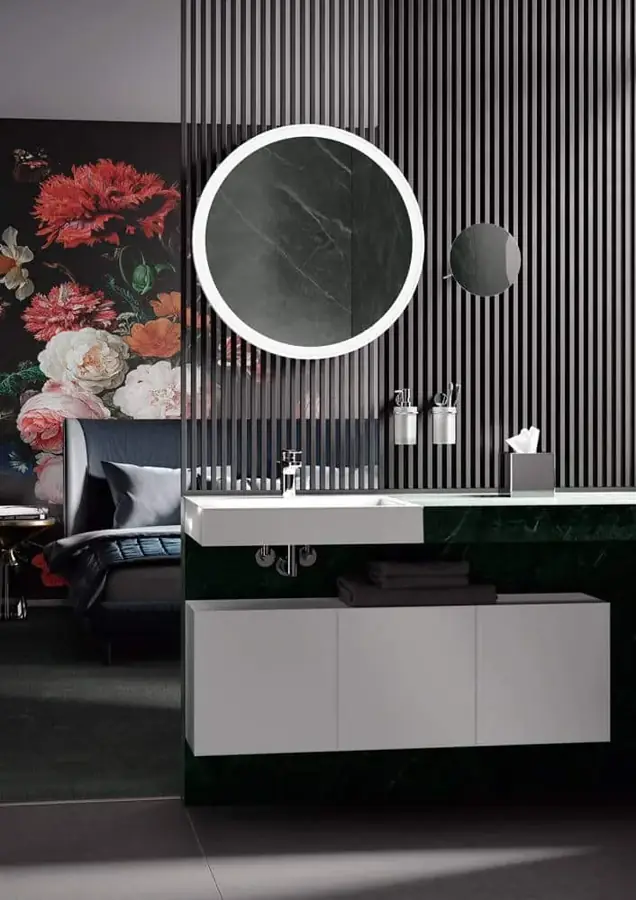
AccesibilidadEspejo con luz LED - Hewi
El nuevo espejo redondo con luz LED de HEWI es toda una revolución de diseño y funcionalidad.
Con una estética contemporánea, fabricado en vidrio de alta calidad y un marco de aluminio en acabado negro mate que aporta un toque de elegancia a cualquier baño, la innovación de HEWI crea un ambiente acogedor a la vez que asegura la eficiencia energética G en su uso.
Su luz suave y uniforme ayuda a crear un ambiente acogedor, convirtiendo el momento baño en una pausa relajante.
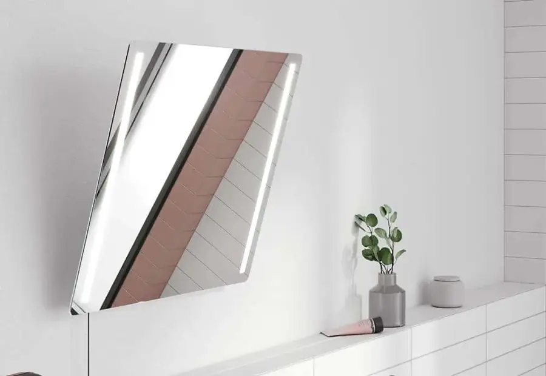
AccesibilidadEspejo LED orientable - Hewi
El espejo LED inclinable de HEWI aporta estilo y funcionalidad a cualquier baño. Su diseño elegante permite ajustar el ángulo hasta 28° de forma motorizada, brindando comodidad con solo pulsar un interruptor inalámbrico.
Con una luz LED eficiente que ilumina suavemente, es ideal para crear un ambiente acogedor mientras garantiza un bajo consumo energético.
Además, el espejo tiene protección antiastillas, asegurando su durabilidad. Perfecto para adaptarse a diferentes entornos, una opción práctica y sofisticada para todos los gustos.
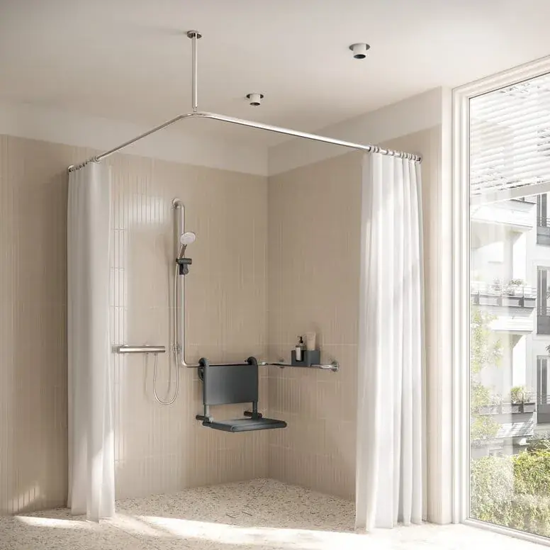
AccesibilidadAccesorios para baños accesibles Warm Touch – Hewi
Descubra la colección WARM TOUCH de la Serie 801 de HEWI, una nueva interpretación del clásico diseño de la marca.
Ideal para baños residenciales y del sector hotelero, estos accesorios presentan una superficie templada, proporcionando confort y creando un ambiente acogedor.
Con un acabado cromado de alto brillo, los productos combinan elegancia y una agradable sensación táctil. La gama incluye barras de apoyo, pasamanos y barras de ducha, todos con un diseño de tubo redondo que facilita el agarre simétrico y moderno. Perfectos para incrementar el bienestar y la seguridad en baños.
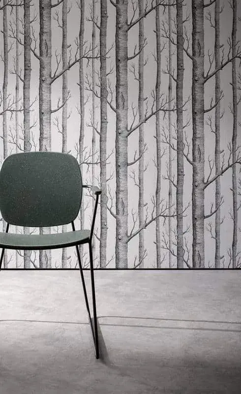
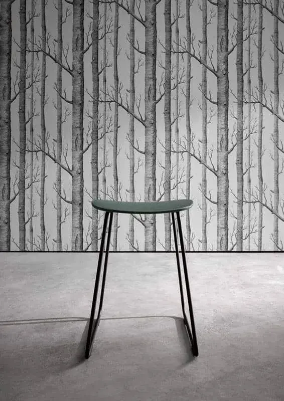
AccesibilidadAsientos para ducha y baños accessible Re-take – Hewi
Si algo define a Hewi como empresa industrial es su conciencia medioambiental y responsabilidad energética.
La marca utiliza los residuos plásticos como parte de material reciclado para su nueva línea Re-take, reduciendo energía y agua en su producción.
Una gama de asientos accesibles de lo más innovadora, pensados para ducha y baño, que se compone por tres modelos de taburete con distintas opciones de respaldo y reposabrazos.
La colección se caracteriza por el aspecto moteado tan especial que le dan los materiales reciclados, el polipropileno y la poliamida. Piezas ergonómicas, totalmente impermeables y duraderas en el tiempo.
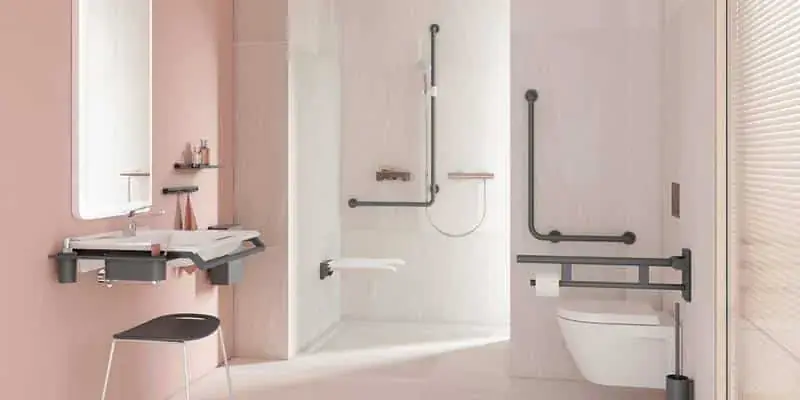
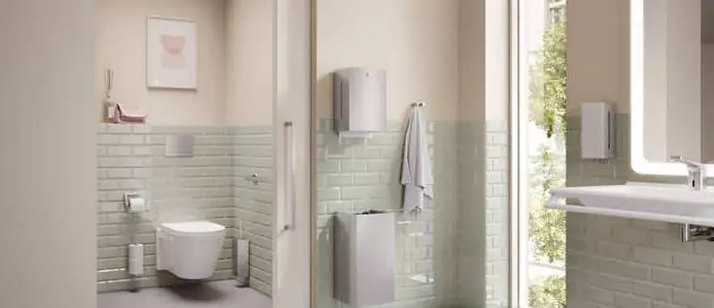
AccesibilidadLavabos y accesorios para baños accesibles S 900 Q – Hewi
Hewi amplía su gama para baños accesibles S 900 Q con nuevos modelos de lavabo y amplitud de accesorios que permiten acondicionar el baño al gusto y necesidad de cada cliente.
Un nuevo diseño, más cuadrado, pensado al detalle para que encaje con el resto de elementos de la estancia, desde la genuinidad y la sofisticación. Disponible en varios tonos y acabados.
La línea de Hewi más inclusiva, está pensada para facilitarte el proceso de instalación y el mantenimiento diario de sus piezas. Con materiales de fácil limpieza y durabilidad, la nueva colección resulta de lo más práctica y funcional.
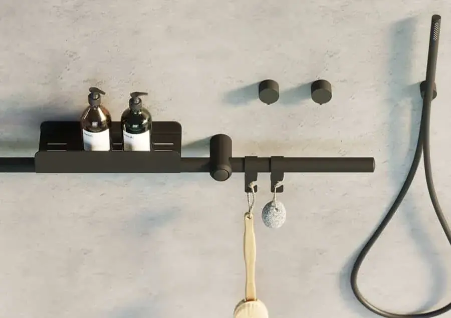
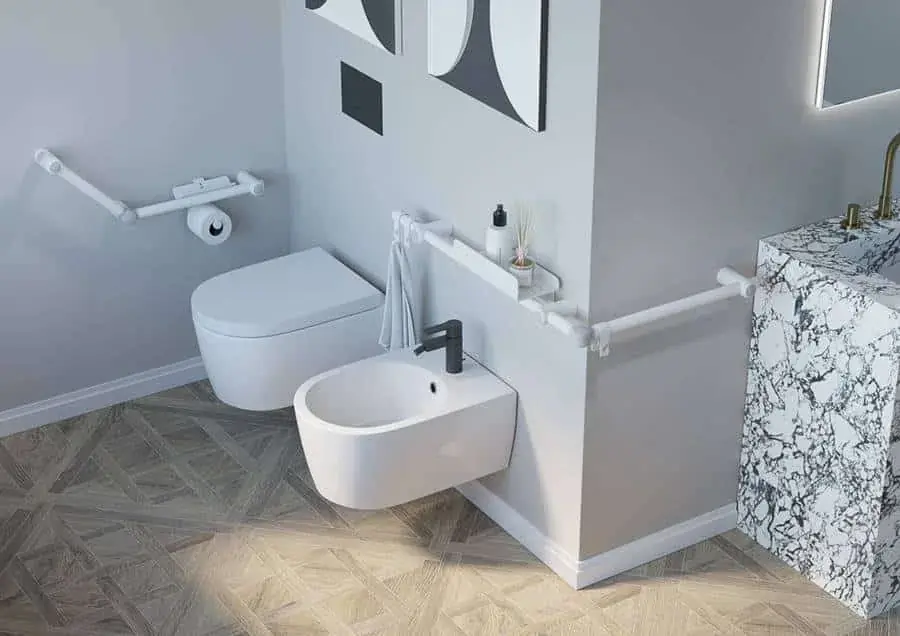
AccesibilidadAccesorios para baños accesibles Gocare- Sonia
Presentamos la línea de asideros y barras Gocare de Sonia para dotar a tu baño de la máxima seguridad.
Una gama completa de accesorios que proporcionan un punto de apoyo esencial para ayudar a la incorporación y para evitar caídas.
Su amplio catálogo está disponible en cuatro acabados distintos: Inox Satinado, Grey silk, negro y blanco. Además, ofrece varios modelos con distintas formas y curvaturas ajustándose al lugar en el que se instalan y a su modalidad de uso.
Sonia apuesta por los baños más accesibles con esta colección, caracterizada además por su fácil instalación y la versatilidad de su diseño.
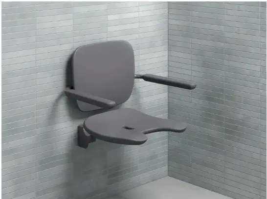
AccesibilidadAsientos para duchas accesibles - Hewi
Con capacidad para soportar hasta 150 kg de peso, los asientos de ducha Hewi nacen para crear duchas
cómodas, a la vez que seguras para los usuarios.
Caracterizados por su manejo, particularmente sencillo, y fabricados con materiales confortables y
antideslizantes, Hewi te ofrece una variada gama que se adapta estéticamente a cualquier tipo de
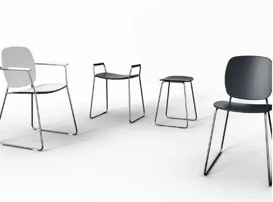
AccesibilidadTaburetes y asientos móviles para baños accesibles - Hewi
Los taburetes y asientos móviles Hewi otorgan mayor confort a nuestro baño, haciéndolo más accesible y ganando en seguridad.
Estructuralmente pensados para facilitar la movilidad y estancia en el baño, se trata de un elemento con múltiples usos que fomenta la independencia de los pacientes con mayores dificultades, psicomotrices y de peso, para sentarse y ponerse de pie.
Es el caso, por ejemplo, del banco de ducha Hewi. Capaz de soportar cargas de hasta 300 kg y con asas laterales para reforzar el punto de apoyo y estabilidad en los usuarios.
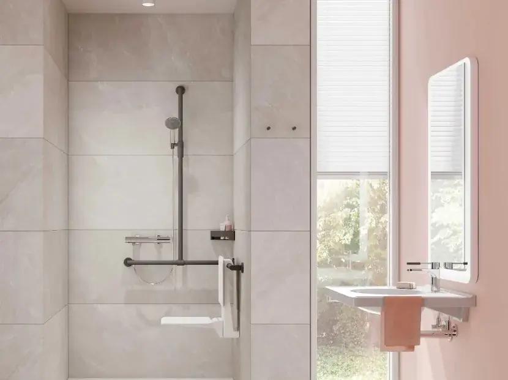
AccesibilidadCabezales de ducha para baños accesibles – Hewi
Hewi ofrece una amplia gama de cabezales y rieles de ducha, combinables con cualquier tipo de baño gracias a la variedad de diseños que tiene.
Cada soporte está especialmente pensado para cumplir su función y ofrecer una mayor estabilidad, con la máxima garantía de seguridad.
Es el caso de la barra de ducha Hewi Warm Touch que mantiene una temperatura caliente para acentuar esa sensación de bienestar durante su uso. O del nuevo soporte para cabezal de ducha que a través de su sistema magnético permite un fácil e intuitivo manejo sin esfuerzo físico.
Soportes innovadores con múltiples funciones, que pueden usarse incluso como punto de sujeción y apoyo para hacer estancias 100% accesibles.
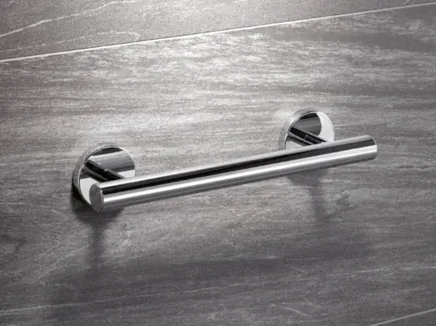
AccesibilidadCarriles de apoyo para duchas accesibles - Hewi
A fin de garantizar la seguridad e integridad del usuario, Hewi lanza su línea de carriles de apoyo para proporcionar un plus de estabilidad y equilibrio en el baño (instalables en lavabo, inodoro o ducha).
Su sistema de agarre adaptado permite un uso simple, cómodo y flexible, sin renunciar al innovador diseño que nos ofrece toda la gama de productos disponibles.
A diferencia de otros productos, el sistema de sellado de los carriles de apoyo Hewi se adapta perfectamente a las posibles irregularidades de la pared y su diseño impide eficazmente la acumulación de agua, imposibilitando así su deterioro.
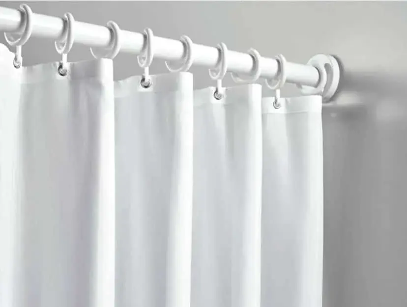
AccesibilidadCortinas para baños accesibles – Hewi
Hewi se propone terminar con las limitaciones físicas que algunos espacios mantienen y promueve la accesibilidad una vez más con sus nuevos modelos de cortinas para baños.
Rieles, mamparas batientes y cortinas de ducha movibles que, junto a las duchas al ras del piso, permiten una óptima movilidad y amplitud de circulación por toda la estancia.
La gama dispone de varios formatos y diseños, incluso se pueden hacer a medida bajo petición. Siempre mirando por la practicidad del usuario, algunos de sus modelos son resistentes a moho u hongos, lavables o ignífugos.
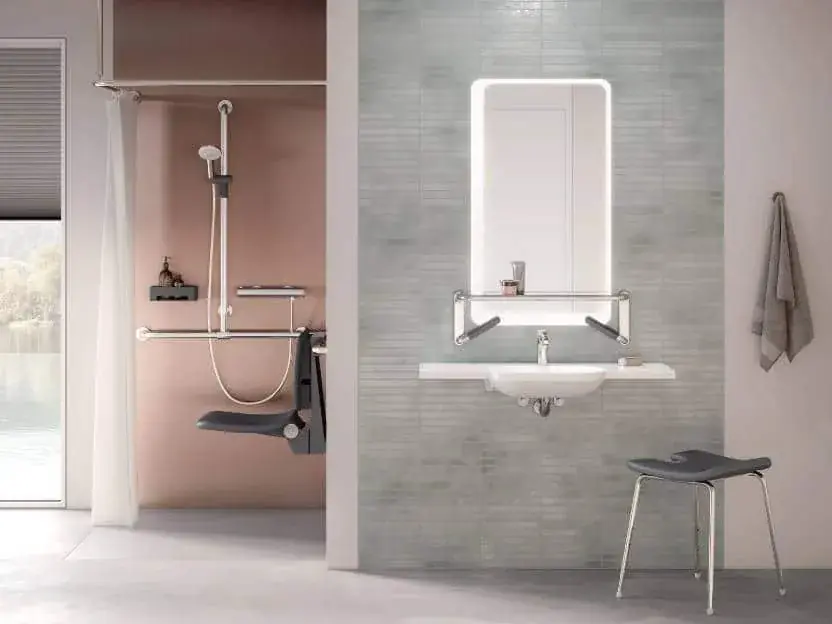
AccesibilidadEstanterías y cajas de ducha para baños accesibles - Hewi
Hewi presenta su gama de cajas de almacenamiento y estanterías para ducha. Piezas con un diseño cuidado e innovador, que lejos de entorpecer la estética visual del baño, optimizan su espacio y dan continuidad a su amplitud.
Los estantes están disponibles en diferentes tamaños para que el usuario pueda colocarlos según su necesidad y disponer de cualquier producto a su alcance. Mencionar que son extraíbles para un práctico mantenimiento.
En cuanto a las cajas de almacenamiento conectables, son de fácil sujeción gracias a su sistema con clip y permiten un mayor almacenamiento además de conservar los productos de forma óptima gracias a su diseño tapado.
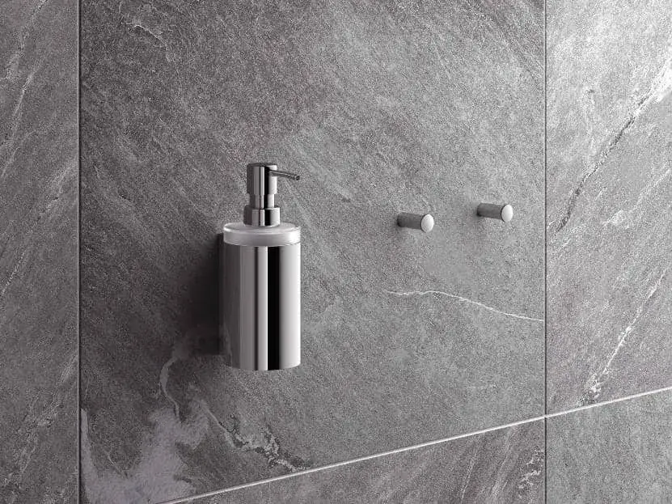
AccesibilidadGanchos para baños accesibles - Hewi
Con Hewi hasta el último detalle de tu baño está pensado para ganar en accesibilidad.
La marca ofrece una colección de ganchos con un atractivo diseño y tamaño reducido para no romper con la estética de la estancia y a la vez, hacerla más útil.
Gracias a su fácil colocación, el usuario podrá colocarlos ahí donde lo necesite. De este modo, se asegura tener en cualquier momento y en cualquier rincón del baño, todos los accesorios o prendas que use en su día a día.
Los ganchos están disponibles en formato simple o doble.
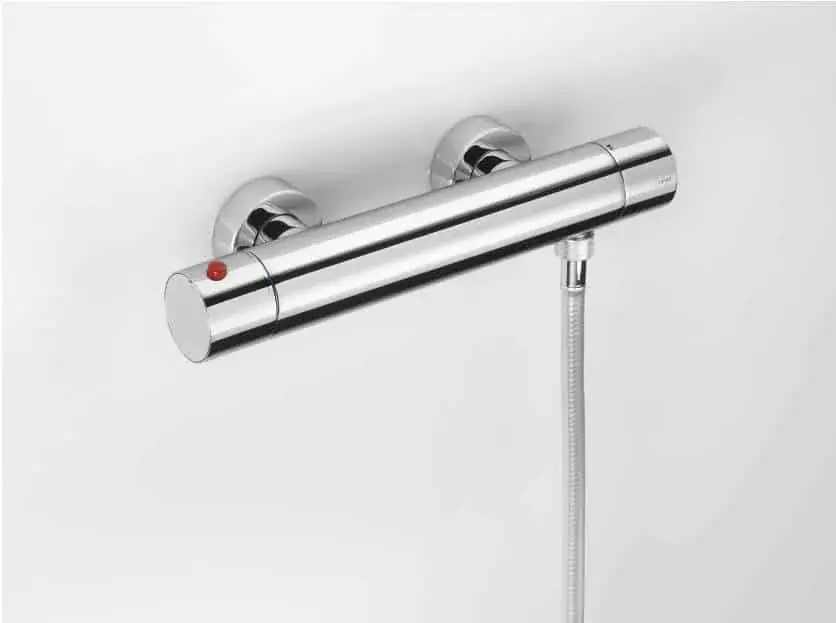
AccesibilidadTermostatos para baños accesibles – Hewi
Cuando tu fuerza o condiciones físicas se ven limitadas, la prevención de cualquier tipo de riesgos se vuelve crucial.
Si profundizamos en contexto baño, una de las situaciones más cotidianas con la que nos encontramos es quemarnos al tocar el grifo cuando el agua caliente está corriendo.
Hewi recoge esta realidad y la convierte en solución con su termostato de ducha HEWI SAFE TOUCH. Un termostato con tecnología integrada que enfría la grifería para evitar que esté caliente al tacto. Además, incluye un sistema de bloque de agua caliente que evita quemaduras.
De este modo, los usuarios con movilidad reducida o fuerza limitada se aseguran poder sostenerse sin ningún imprevisto.
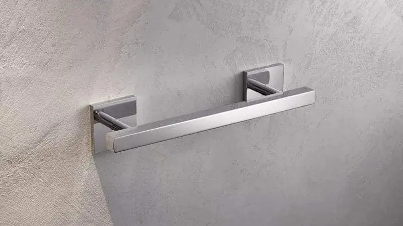
AccesibilidadBarras de soporte - Hewi
HEWI te acerca soluciones en barras de soporte con el objetivo de facilitarte seguridad en todas las zonas de tu baño, ya sean los lavabos, el inodoro, el bidet o la ducha.
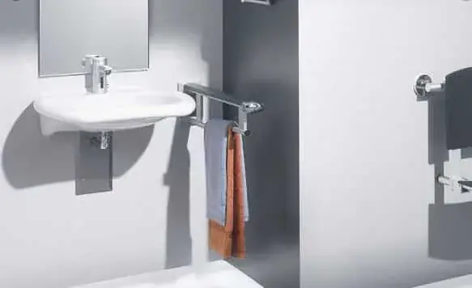
AccesibilidadBarra de apoyo para lavabo Plan Care - Keuco
Como marca de referencia, KEUCO aporta a tu vida un sinfín de soluciones pensadas para tu confort y comodidad. Las barras de apoyo Pale Care aportan estabilidad y seguridad a tu día a día, a través de su funcionalidad y diseño elegante.
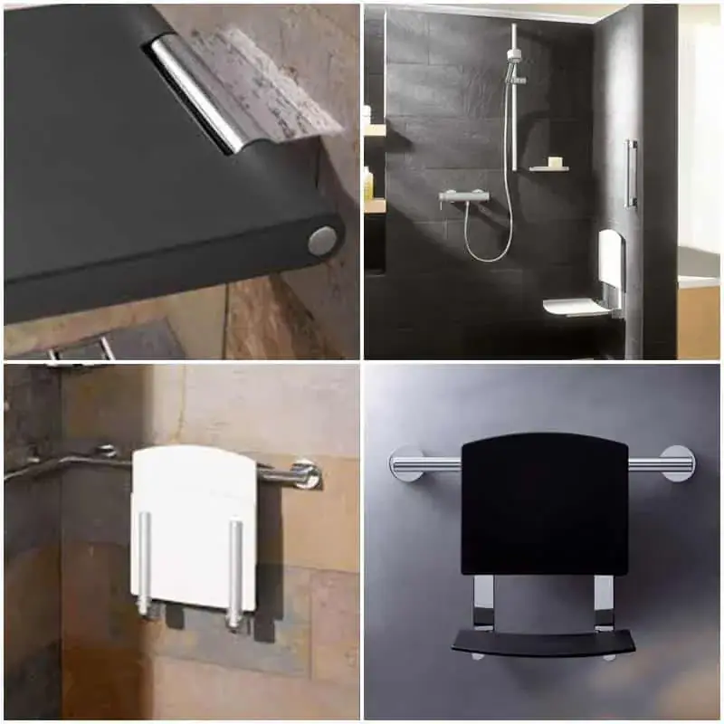
AccesibilidadAsiento plegable para ducha Plan Care - Keuco
KEUCO te ofrece soluciones para las últimas tendencias del mercado. En este caso, un asiento plegable para ducha, ideal para las duchas a ras de suelo, que tiene la virtud de ocupar muy poco espacio.
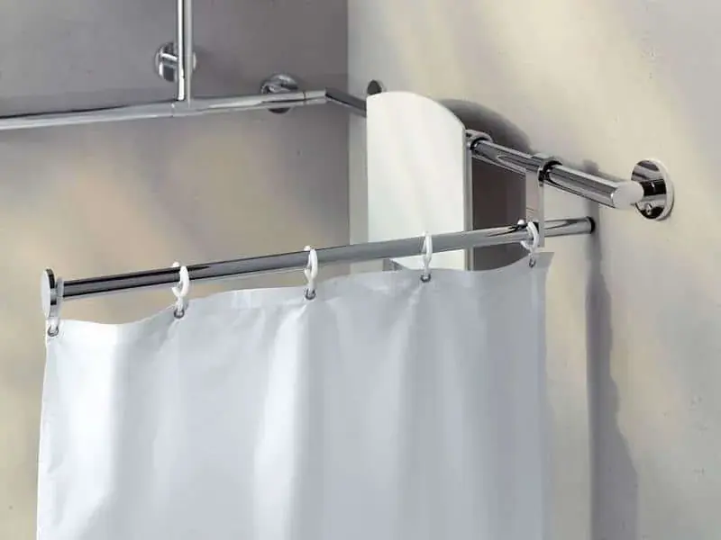
AccesibilidadBarras de soporte para ducha Plan Care - Keuco
Estética, seguridad y sujeción. La barra de soporte para ducha Plan Care tiene capacidad para 115 kg de peso y se ofrece en dos elegantes acabados, cromado y/o aluminio.
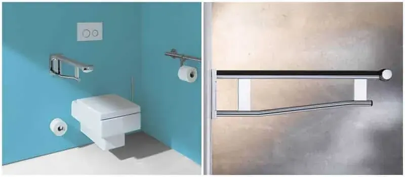
AccesibilidadAsideros/Barras de soporte para inodoros Plan Care - Keuco
Estabilidad inteligente y segura para tu día a día, con las barras de soporte para inodoro Plan Care de KEUCO. Pensado para hacerte la vida más fácil, puede incorporar portarrollos, mando a distancia integrado de descarga, etc.
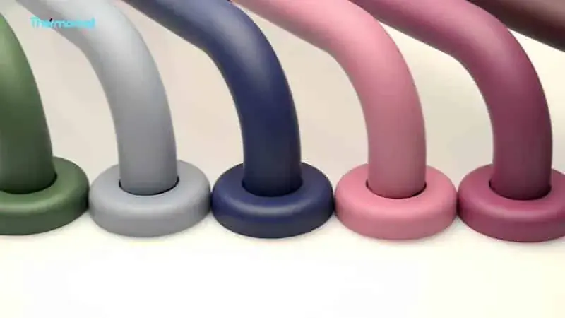
AccesibilidadBarras de seguridad Soft - Thermomat
La serie de barras de seguridad, SOFT, de THERMOMAT (marca italiana de prestigio), tienen un 120% más de capacidad de agarre. Además, ofrecen una experiencia agradable al tacto y tienen un diseño único y funcional.
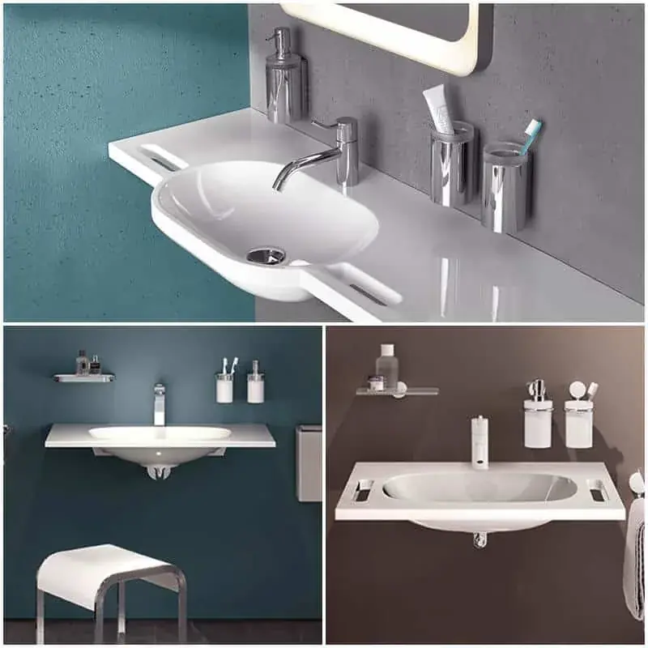
AccesibilidadLavabos accesibles - Hewi
Realizados de compuesto de mineral, cosa que permite una alta comunidad, cuidado y limpieza, los lavabos accesibles de HEWI son soluciones que permiten una gran funcionalidad y maniobrabilidad al usuario.
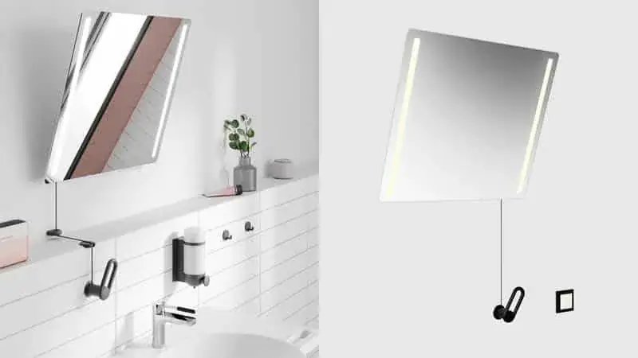
AccesibilidadEspejos ajustables - Hewi
HEWI te ofrece una serie de nuevos modelos en espejos ajustables, con y sin iluminación LED integrada, basculantes, de una comodidad extrema. Eficacia 100% demostrada en el mercado, que se adapta a las necesidades del usuario de forma fácil y cómoda.
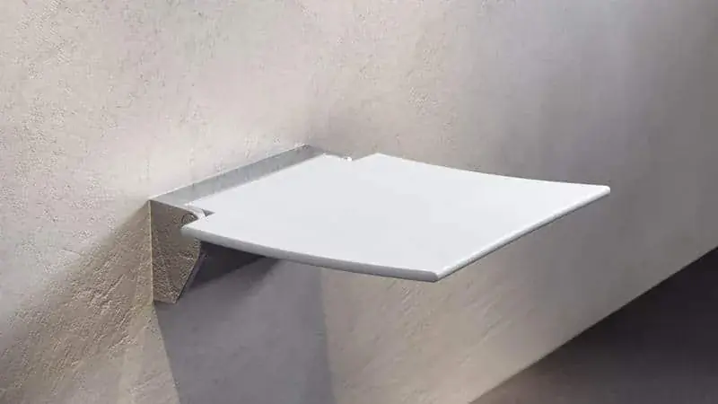
AccesibilidadAsientos para ducha - Hewi
Los asientos para ducha de HEWI, con capacidad de peso de hasta 150 kg, consiguen un 100% en comodidad y otro 100% en seguridad. Muy fáciles de usar: permiten plegarse, en el caso de que no tengan que usarse.
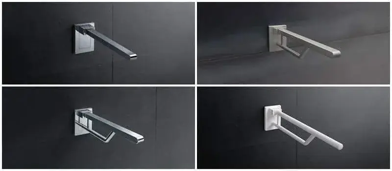
AccesibilidadBarras de soporte para inodoro - Hewi
Gracias a las barras de soporte para inodoro de HEWI, las personas con fuerza y movilidad limitadas, puede acceder a la comodidad del inodoro, debido al riel de soporte de bisagras que incorpora.
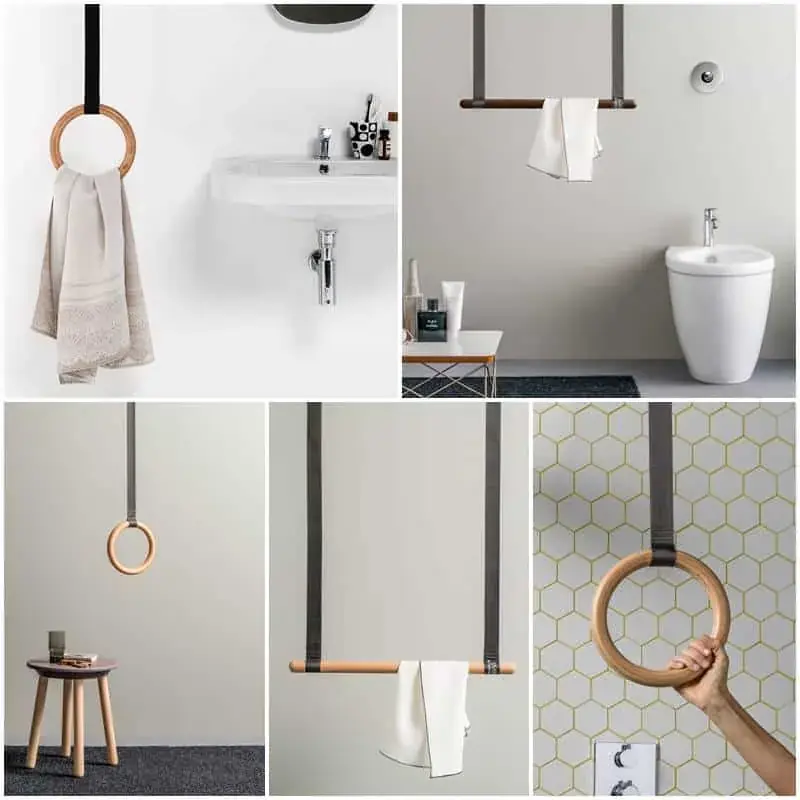
AccesibilidadToallero y barra Gambol - Ever Life Design
Un toallero barra creativo, inspirado en los equipos de gimnasia, de Ever Life Design. Gambol está hecho de madera de haya, cosa que aporta calidez a tu baño, además de una gran funcionalidad y resistencia.
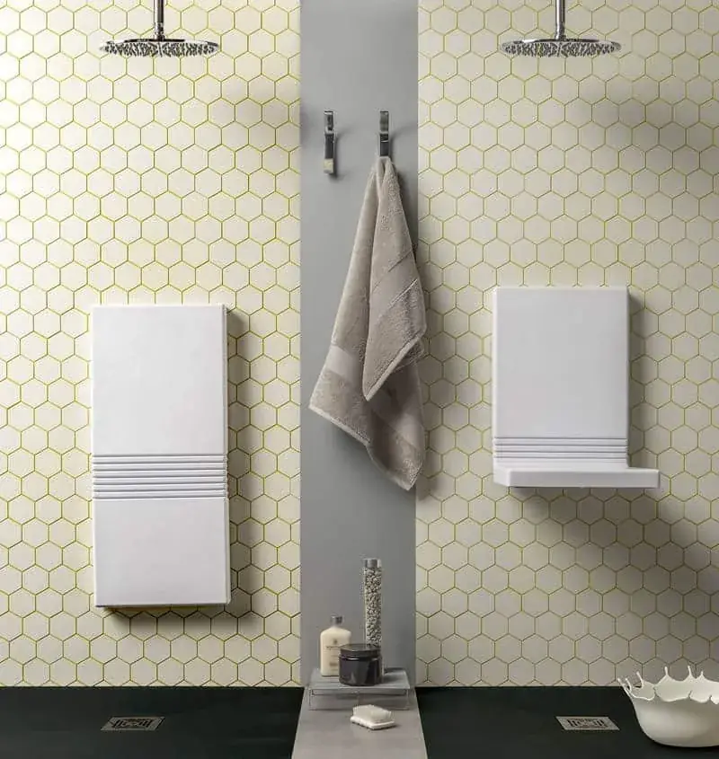
AccesibilidadAsiento para ducha Tuck - Ever Life Design
Type, Tall, Tray… Estos son los tres modelos, de elegante diseño, en los que se ofrece el asiento para ducha, de poliuretano suave, Tuck, de la marca Ever Life Design.
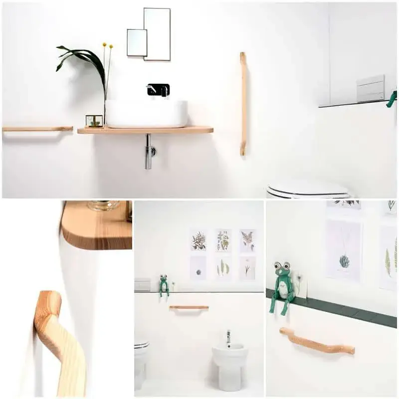
AccesibilidadToaller0 y barra de seguridad Feel - Ever Life Design
Una barra de fresno natural, que se puede instalar tanto en posición vertical como en posición horizontal, con la garantía de seguridad y la calidad de diseño de una marca puntera como lo es Ever Life Design.
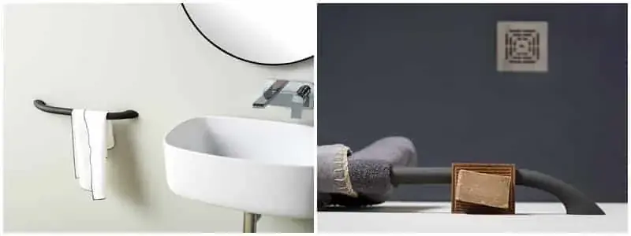
AccesibilidadToallero y barra plegable Style - Ever Life Design
Ever Life Design es un toallero que le dará a tu baño ese punto de singularidad que necesita. Style ofrece este accesorio de baño, que garantiza un mejor agarre, en distintos acabados, según para que puedas escoger el que mejor te encaje.
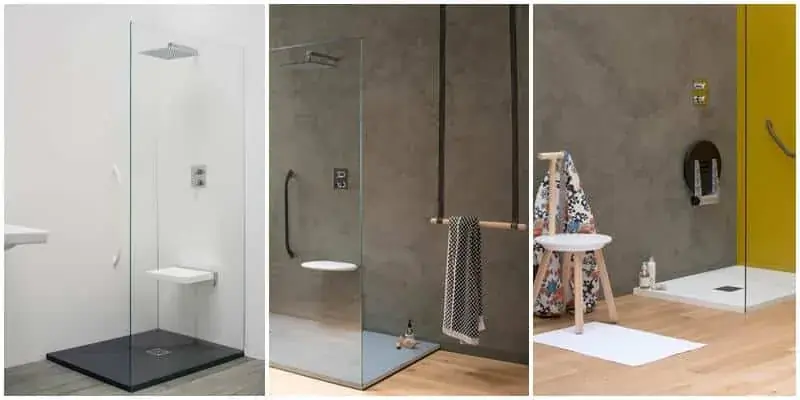
AccesibilidadAsiento para ducha Style - Ever Life Design
Style es un asiento para ducha 100% seguro y cómodo diseñado por Ever Life Design. Se ofrece en dos modelos, Sttle Eclypse, de diseño minimalista, y Style Round, de formas elegantes y funcionales.
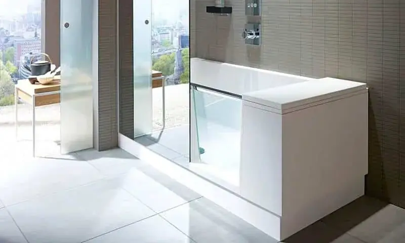
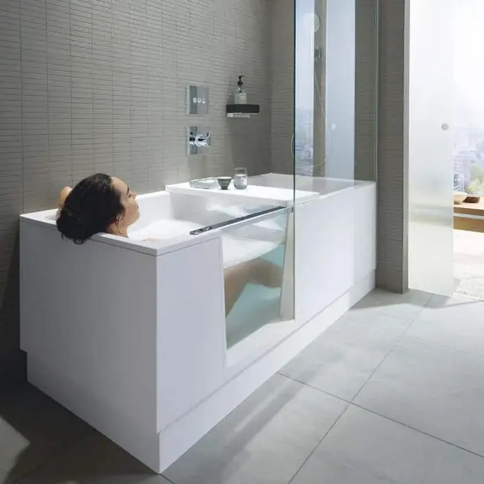
AccesibilidadDucha + Bañera – Duravit
Para quienes desearían tener en su baño tanto ducha como bañera, Duravit ha creado una perfecta solución.
Su nombre lo indica claramente, Shower + Bath, una ducha integrada en una bañera, diseñada por EOOS, óptima para cuartos de baños de dimensiones reducidas.
Una combinación perfecta que incorpora un moderno y práctico diseño, junto a diversas funcionalidades adicionales:
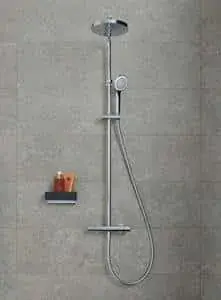
AccesibilidadTermostatos de protección anti quemaduras – Duravit
Duravit ha desarrollado un sistema de griferías para evitar los momentos desagradables, en el baño, cuando, por ejemplo, ponemos el agua demasiado caliente.
Y como la seguridad no está reñida con la estética, el sistema incorpora un interesante y característico diseño.